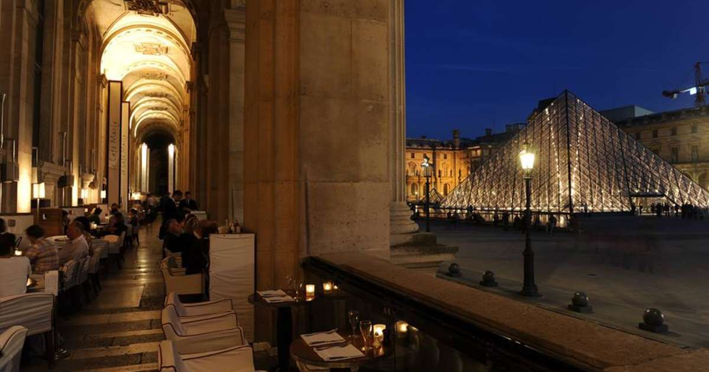

Paris, France
One of the most stunning cities on earth is Paris. The Eiffel tower, Notre-Dame cathedral, and the Louvre Museum are among its most famous landmarks. It is known for being a charming and artistic city. The city is renowned for its top-notch cuisine as well as its café patios where locals and tourists alike can sit back and relax while sipping a café au lait and people-watching. Paris is also home to some of the world's most iconic fashion designers and luxury brands, making it a shopping destination for fashion enthusiasts from around the world. Its fashion district, the Avenue des Champs-Élysées, is a dream destination for fashion lovers, with its upscale boutiques and designer stores. In addition to its fashion and art scenes, Paris is a city of great historical significance. The city played a pivotal role in many important events in world history, from the French Revolution to World War II. Visitors to Paris can explore its rich history by visiting landmarks such as the Palace of Versailles, the Arc de Triomphe, and the Catacombs of Paris. But Paris is not just a city for history and culture enthusiasts. It is also a city of romance, with its charming architecture, winding streets, and beautiful parks. The Seine River, which runs through the heart of the city, is a popular spot for romantic boat rides and strolls along the riverbanks.
Paris is a city that has captured the hearts of travelers and dreamers for centuries. Its winding streets, elegant architecture, and vibrant culture make it an irresistible destination for couples seeking a romantic getaway. From strolling hand in hand along the Seine River to sipping coffee at a charming outdoor café, there are countless ways to experience the romance of Paris. For art lovers, Paris is a treasure trove of world-renowned museums and galleries. The Louvre, one of the most famous art museums in the world, is home to countless masterpieces, including the Mona Lisa and the Winged Victory of Samothrace. Other museums, such as the Musée d'Orsay and the Centre Pompidou, offer a more contemporary perspective on art and culture. But Paris is not just a city of art and romance - it is also a city of culinary delights. French cuisine is world-renowned for its rich flavors and elegant presentation, and Paris is home to some of the finest restaurants in the world. From Michelin-starred establishments to charming neighborhood bistros, there is no shortage of delicious food to be found in Paris.
Go back